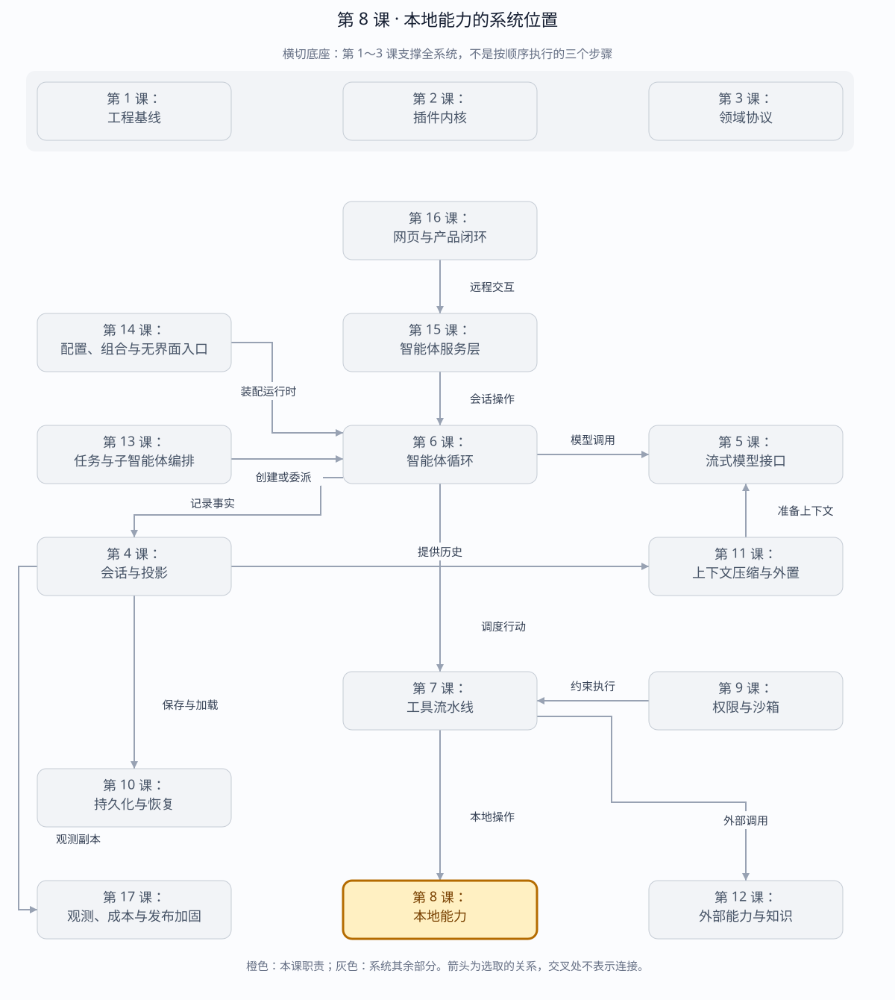

第 8 课：文件系统、子进程、Shell 与 PTY
本地能力不是一个万能 bash 函数，而是四层独立 seam：路径、进程、命令解释和交互终端。
章节概览（可选）：三框架职责摘要
本章对比：DeepSeek Harness / DeepAgents / OpenHands
口径：DeepSeek 依据本地原仓库（99f6f02fecdb），不是 harness-lab；deepagent 按 LangChain DeepAgents 理解；OpenHands 对比当前 Software Agent SDK，不混用旧 V0。在线资料核对于 2026-08-28，描述文档能力，不代表已在本实验室安装或测试。没有依据的同名能力不强行等同。
三者的关键区别：可移植性取决于环境接口是否足够清晰；不要让工具定义直接绑定开发机路径和进程实现。（基于上述依据的归纳）
本章在全系统中的位置
工具层下方，直接接触文件、子进程和终端的执行层。
下面是本课程的概念地图，不是某框架的逐包调用图，也不表示实验室已默认装配全部能力。三套框架的实际对应关系见上方横向对比表。
全系统定位 · 橙色高亮第 8 课
打开大图 · Mermaid 图源
| 上游与输入 | 第 7 课已准入的文件与命令操作。 |
|---|
| 下游与输出 | 文件内容、修改结果、进程输出或终端句柄，返回工具层。 |
|---|
| 不归本章负责 | 能够读写本地路径并不代表已经隔离；安全约束由第 9 课补齐。 |
|---|
| 放进具体场景 | 读源码用文件能力，运行测试用进程能力；长期交互 shell 需要独立终端生命周期。 |
|---|
接着看下方「可视化图解」：局部模块图解释职责，时序图解释一次调用，分支图解释异常与边界。
本课导览
| 包含内容 | 工作区文件读写、子进程、终端命令、伪终端、输出溢出和进程清理。 |
|---|
| 涉及模块 | WorkspaceFs、LocalProcessRuntime、LocalShell、PTY、溢出存储。 |
|---|
| 白话解释 | 把“碰文件”和“跑程序”拆成受控能力，而不是把整台机器直接交给模型。 |
|---|
| 解决的问题 | 防止路径逃逸、凭证泄漏和孤儿进程，同时支持真实编码任务需要的文件、命令与交互终端。 |
|---|
点击下面的概念名称，可直达该概念的三框架实现、区别与依据。原有能力清单、示例和验收描述面向 harness-lab 教学实现；不要将其直接当作上游框架能力声明。
完整能力清单
| 能力 | 具体覆盖 | 安全边界 |
|---|
| 工作区路径 | 解析相对路径，检查现有目标和待创建目标的真实父目录。 | 拒绝绝对路径、上级路径和符号链接逃逸。 |
| 文件操作 | 原子写入、有限读取、目录列举、字面字符串搜索和展示裁剪。 | 读取硬上限与展示截断分别报告。 |
| 子进程 | 设置参数、工作目录、环境、超时和取消，分别收集标准输出与标准错误。 | 默认清洗密钥、口令、令牌和 DSH_ 环境变量。 |
| 进程收敛 | 向进程组发送终止信号，宽限期后升级强制终止，运行时释放时等待全部进程。 | 非零退出是业务结果，不伪装成基础设施异常。 |
| 输出溢出 | 内存保留可展示前缀，完整大输出写入私有溢出文件并可回读。 | 输出上限不会导致进程失控或内存无限增长。 |
| 终端命令 | 固定工作区和解释器执行命令，返回结构化退出码与输出。 | 命令失败作为结果交还模型。 |
| 真实伪终端 | 创建交互终端，支持写入、调整尺寸、读取输出和等待退出。 | 释放运行时时关闭仍存活的终端。 |
主概念深挖：受控本地执行
本地执行层的上游是工具管线，下游是操作系统文件与进程接口；它把文件、进程、命令和交互终端拆成可限制、可取消、可收敛的独立能力。
Agent Tool（上游）
├─ 路径 + 文件参数 ─► WorkspaceFs ─► 文件系统
└─ command / argv ───► LocalShell ─► ProcessRuntime ─► OS 进程组
├─ stdout/stderr（输出）
├─ SpillStore（大输出）
└─ PTY（交互输入输出）
权限与 Sandbox 横切每一次实际访问
| 背景与目的 | 编码智能体必须接触真实机器，但“万能 shell”会把路径、凭证、进程和输出风险混在一起，难以限制和审计。 |
|---|
| 输入与输出 | 输入是工作区相对路径、命令、参数、环境、终端输入和取消信号；输出是文件内容、搜索结果、退出码、标准流和溢出引用。 |
|---|
| 适用场景 | 阅读和修改代码、运行测试、启动开发服务、操作交互式命令行。 |
|---|
| 底层组件 | realpath 与符号链接检查、原子重命名、Bun.spawn、独立进程组、信号升级、内存输出预算和原生 PTY。 |
|---|
| 核心逻辑 | 文件访问先解析真实边界；子进程先净化环境再创建进程组；取消先温和终止、超时后强制终止；大输出仅把前缀留在内存。 |
|---|
| 权衡 | 拆层增加接口数量，却使路径安全、进程生命周期和交互终端能分别测试和替换。 |
|---|
| 方案对比 | 直接调用系统 shell 最灵活但参数和边界不透明；结构化进程接口更安全，确需 shell 语义时再通过 LocalShell 显式进入。 |
|---|
场景穷举
本地操作
├─ 工作区内正常文件 → 读/写/列举/搜索
├─ ../、绝对路径、符号链接 → 拒绝逃逸
├─ 小输出进程 → 内存返回
├─ 大输出进程 → 前缀 + SpillRef
├─ 超时/取消 → SIGTERM → 宽限 → SIGKILL
├─ 非零退出 → 结构化业务结果
└─ 交互程序 → PTY write/resize/read/exit
| 场景 | 关键风险 | 控制措施 |
|---|
| 新建文件 | 目标不存在，无法 realpath 自身。 | 逐级寻找真实父目录并确认仍在工作区。 |
| 符号链接 | 字符串路径在根内，真实目标在根外。 | 读取目标和写入父目录都检查 realpath。 |
| 凭证环境 | 子进程继承 API_KEY/TOKEN。 | 默认清洗敏感名称，只允许显式覆盖。 |
| 进程树 | 只杀父进程，孙进程继续存活。 | POSIX 使用独立进程组并向组发信号。 |
| 输出洪泛 | 无限 stdout 耗尽内存。 | 内存预算后溢出磁盘，保留完整内容摘要。 |
| 平台差异 | PTY、信号或沙箱不可用。 | 运行能力探测，明确失败或声明降级。 |
多方案对比
| 方案 | 灵活性 | 安全边界 | 选择条件 |
|---|
| 直接 shell 字符串 | 最高。 | 参数、引用和副作用不透明。 | 用户明确提供的复杂 shell 语义。 |
| 结构化 argv 子进程 | 高。 | 无 shell 注入，环境和 cwd 明确。 | 框架内部启动工具。 |
| 容器/虚拟机执行 | 中。 | 隔离最强。 | 不可信代码、多租户、跨平台一致性要求高。 |
| 宿主 OS 沙箱 | 高。 | 依赖平台能力。 | 本地编码助手，需要访问真实工作区。 |
关键设计反问
- 路径前缀检查为什么不够？
- 符号链接能让字符串仍以工作区开头但实际解析到外部；安全判断必须基于规范化真实路径。
- 非零退出为什么不是异常？
- 测试失败、grep 未命中都用退出码表达正常业务结果；抛异常会丢失 stdout/stderr 和可修正上下文。
- 为什么既需要 Shell 又需要 ProcessRuntime？
- Shell 负责命令语言，ProcessRuntime 负责生命周期和字节流；分开后无 shell 的结构化程序也能复用安全收敛能力。
分层
Agent Tool
├── fs_read/write/list/search ──> WorkspaceFs
└── shell_exec ────────────────> LocalShell
│
▼
LocalProcessRuntime
├── pipe subprocess
└── Bun Terminal (PTY)
| 层 | 拥有的语义 | 不应该拥有 |
|---|
| WorkspaceFs | canonical root、symlink、原子写、搜索上限 | 用户审批 |
| ProcessRuntime | 环境清洗、进程组、TERM→KILL、spill | Shell 字符串解释 |
| LocalShell | bash/pwsh 选择、cwd、默认 timeout | 进程回收 |
| PTY | 终端分配、write、resize、终端输出 | 后台 Job id |
终端命令：三框架分别怎么做？
同一个问题：连续两次命令之间会保留 cd 和 shell 变量吗？
这个概念的区别：测试连续 cd/export 时，先确定比较的是单次执行接口还是有状态终端。
真实伪终端：三框架分别怎么做？
同一个问题：交互命令等待输入时，谁判定就绪并发送中断？
这个概念的区别：持久状态、终端仿真和伪终端是不同能力，平台回退时要逐项验证交互行为。
文件安全
用户路径
→ 拒绝绝对路径
→ resolve(root, relative)
→ 拒绝词法 .. 逃逸
→ realpath(existing / nearest ancestor)
→ 再次拒绝 symlink 逃逸
→ 执行读写
只检查字符串前缀不够。workspace/escape -> /outside 看起来位于 root 下，真正访问时却已越界，所以现有路径和可写父目录都必须检查 realpath。
工作区路径：三框架分别怎么做？
同一个问题：配置 cwd 后，文件工具还能访问根目录之外吗？
这个概念的区别：工作目录回答“相对路径从哪里算”，访问围栏回答“允许到哪里”，两者必须分开配置。
文件操作：三框架分别怎么做？
同一个问题：一次编辑的存储语义和模型展示由谁负责？
这个概念的区别：对比文件能力要落到实际操作与后端，不能从“都有文件工具”推导相同并发写入保证。
进程生命周期
spawn detached process group
├── stdout/stderr → 有限内存前缀 + 完整 spill
├── abort/timeout → SIGTERM
├── grace 到期 → SIGKILL
└── runtime dispose → 终止并等待所有后台进程和 PTY
父进程环境会默认删除名字匹配 KEY|PASSWORD|SECRET|TOKEN 以及 DSH_* 的变量。只有调用方显式传入的环境项才可以恢复它们。
子进程：三框架分别怎么做？
同一个问题：命令以谁的环境和权限启动？
这个概念的区别：环境继承、shell 解释和执行位置是三个独立问题；远程执行也需要检查远端凭据与权限。
进程收敛：三框架分别怎么做？
同一个问题：工具返回取消后，后代进程一定都停止了吗？
这个概念的区别：验收应观察后代是否存活，而不只是等待 API 返回；资源拥有者与终止范围必须明确。
输出溢出：三框架分别怎么做？
同一个问题：模型只看到截断输出时，完整内容还能找回来吗？
这个概念的区别：区分采集上限、落盘上限与模型展示上限；“有文件引用”必须同时说明文件是否完整。
运行与调试
cd harness-lab
bun run demo:local
VS Code F5 → 07a · 工作区文件系统
VS Code F5 → 07b · 进程、终端与伪终端
# 重点断点
# WorkspaceFs.resolveExisting / ensureWritableParent
# LocalProcessRuntime.spawn 的 terminate
# OutputCollector.push / finish
# spawnTerminal 的 onData / onExit
三方依赖
普通子进程使用 Bun 兼容的进程 API；真实 PTY 使用 Bun 原生 Bun.spawn(..., { terminal })，无需 node-pty 或其他运行时三方包。
本阶段验收
TypeScript strict check: passed
tests: 53
pass: 53
fail: 0
覆盖：相对/绝对/符号链接逃逸、原子写、读写/搜索上限、
环境密钥清洗、非零退出、spill、timeout、abort、SIGKILL 升级、
dispose 回收、固定 cwd、shell tool、真实 PTY write/resize/exit。
源码
下一课在这些能力之前加入 Permission + Sandbox：read-only、workspace-write、danger-full-access，以及审批后重试。
返回完整路线 →